, Rayleigh range
, Rayleigh range ![\(R(z)=z[1+(z_0/z)^2]\)](m/c542c346dc0891ddb74abd254a0e569a6279aa72.svg) and far-field half-angle
and far-field half-angle Model
Write
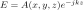
with slowly varying:
slowly varying: 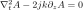
(paraxial). The Gaussian solution: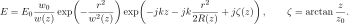
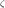
is the Gouy phase ( across the focus). Beam-parameter product
across the focus). Beam-parameter product 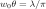
: a narrow waist diverges fast (Kogelnik and Li 1966). Real beams: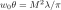
.Cavity matching
A beam fits a resonator when
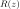
equals the mirror radii at the mirror positions. Symmetric confocal cavity (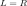
): , . Stability of a two-mirror cavity: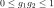
,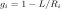
.Worked example
HeNe at 633 nm,
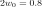
mm: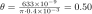
mrad (divergence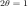
mrad),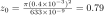
m. At 10 m: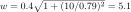
mm, beam width 10.2 mm. Confocal cavity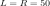
cm: mm, at the mirrors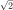
larger: 0.63 mm.Butt coupling into a fibre
A laser diode's output is roughly Gaussian with a small waist and a large divergence. To keep the beam inside a fibre mode of radius
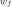
(half the MFD), the fibre must sit within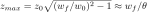
. Full divergence at 850 nm:
at 850 nm: 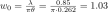
µm,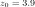
µm; MFD 9 µm gives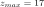
µm. That is why packages use lensed fibres or ball lenses to match the two mode sizes.Picture: beam envelope
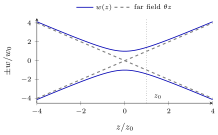
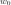
, the Rayleigh range where the beam has widened by , and the far-field divergence .
.At
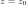
the width is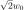
and the wavefront curvature is strongest; beyond a few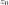
the beam grows linearly with half-angle .Engineering applications
Fibre coupling (mode-field matching: overlap of two Gaussians), laser focusing for machining and lithography (spot
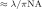
), LiDAR beam footprint, free-space optical links, optical tweezers, grating couplers designed to emit near-Gaussian beams.Exam-style exercise
A 5 mW He–Ne beam (633 nm) with
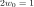
mm. (a) Diameter at 100 m. (b) It is focused by a lens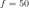
mm placed at the waist: focal spot radius (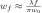
), peak intensity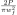
, depth of focus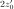
. (c) Fraction of power inside a circle of radius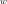
.Solution
(a)
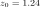
m,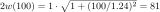
mm. (b)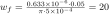
µm;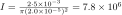
W/m²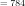
W/cm²;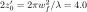
mm. (c)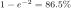
(the formula sheet's definition of the beam diameter).Pitfall
is the
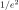
intensity radius, not the FWHM: FWHM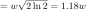
.